ChIP-seq down-stream analysis: ChIPseeker¶
Learning outcomes
Using ChIPseeker package
- to profile ChIP signal by genomics location and by ChIP binding to TSS regions
- to annotate peaks, visualise and compare annotations
- to run and compare functional enrichment
Introduction¶
In this tutorial we use another package, ChIPseeker, to have a look at the ChIP profiles, annotate peaks and visualise annotations as well as to run functional enrichment. In a way, ChIPseeker can be seen as an alternative and newer workflow to ChIPpeakAnno (introduced in #####). It also offers additional functionality, e.g. especially when it comes to visualising ChIP profiles and comparing functional annotations.
It supports annotating ChIP peaks and provides functions to visualize ChIP peaks coverage over chromosomes and profiles of peaks binding to TSS regions. Comparison of ChIP peak profiles and annotation are also supported. Moreover, it supports evaluating significant overlap among ChIP-seq datasets. Currently, ChIPseeker contains 17,000 bed file information from GEO database. These datasets can be downloaded and compare with user’s own data to explore significant overlap datasets for inferring co-regulation or transcription factor complex for further investigation.
Data & Methods¶
We will build upon the main labs, using the same dataset and results from DiffBind analyses that we have saved under DiffBind.RData. The tutorial is based on the ChIPseeker package tutorial so feel free to have this open alongside to read and experiment more.
Setting-up¶
If you have not done it already, install R and R-Studio. Refer back to ####[pre-course](../precourse)### preparations for instructions.
You can continue working in the diffBind directory. We need access to diffBind.RData object & some libraries
In an ``R``session:
# Load libraries (install if needed)
library(DiffBind)
library(ChIPseeker)
library(ReactomePA)
library(clusterProfiler)
library(biomaRt)
library(org.Hs.eg.db)
library(TxDb.Hsapiens.UCSC.hg19.knownGene)
txdb <- TxDb.Hsapiens.UCSC.hg19.knownGene
ChIP profile¶
ChIP peaks coverage plot¶
After peak calling one may want to visualise distribution of peaks locations over the whole genome. Function covplot calculates coverage of peaks regions over chromosomes.
Let’s use data saved in DiffBind.RData objects. From this object we can easily extract peaks called for all our libraries as well as consensus peakset. In principle, we could also use ChIPseeker on raw .BED files.
# Let's start fresh removing all objects from R environment
rm(list = ls())
# loading diffBind.RData
load("diffBind.RData")
# Do you remember what objects we have saved in the diffBind.RData
ls()
# res.cnt3 object was the final one containing consensus peaks and differential binding results
# viewing all samples
dba.show(res.cnt3)
# this should show you our 8 libraries
> dba.show(res.cnt3)
ID Tissue Factor Replicate Caller Intervals FRiP
1 REST_chip1 HeLa REST 1 counts 6518 0.11
2 REST_chip2 HeLa REST 2 counts 6518 0.08
3 REST_chip3 neural REST 1 counts 6518 0.07
4 REST_chip4 neural REST 2 counts 6518 0.09
5 REST_chip5 HepG2 REST 1 counts 6518 0.08
6 REST_chip6 HepG2 REST 2 counts 6518 0.06
7 REST_chip7 sknsh REST 1 counts 6518 0.10
8 REST_chip8 sknsh REST 2 counts 6518 0.06
To plot peaks over genomic locations we need to extract from res.cnt3 peaks of interest, e.g. consensus peaks or present in a single replicate etc. Here, we will focus on peaks present in HeLa replicates.
# extracting consensus peak set with 6518 peaks
peaks.consensus <- dba.peakset(res.cnt3, bRetrieve = T)
# extracting HeLA peaks
peaks.HeLa_rep1 <- peaks.consensus[res.cnt3$called[,1]==1] # peaks called in rep 1
peaks.HeLa_rep2 <- peaks.consensus[res.cnt3$called[,2]==1] # peaks called in rep 2
# adding an unified affinity scores column (re-formatting data)
peaks.HeLa_rep1$Score <- peaks.HeLa_rep1$REST_chip1
peaks.HeLa_rep2$Score <- peaks.HeLa_rep2$REST_chip2
# plotting coverage for replicate 1, using affinity scores as a weight for peaks height
covplot(peaks.HeLa_rep1, weightCol = "Score")
# zooming in to a selected region is also possible
covplot(peaks.HeLa_rep1, weightCol = "Score", xlim=c(0, 1e07))
We can also compare peaks across replicates. This should give us visual assessment of variability between replicates: peaks locations and strength should match in an idealistic scenario
# creating genomicRangesList object holding replicates 1 and 2
grL.HeLa <- GenomicRangesList(HeLa_rep1=peaks.HeLa_rep1, HeLa_rep2=peaks.HeLa_rep2)
# plotting using affinity scores as a weight for peaks height
covplot(grL.HeLa, weightCol = "Score")
# zooming in
covplot(grL.HeLa, weightCol = "Score", xlim=c(0, 1e07))
What do you think?
- are these peaks reproducible?
- which pair of replicates is most consistent, HeLA, neural, HepG2 or sknsh?
- why is it good to always look at the data instead of simply trusting the output of the summary statistics, after all, we do rely on diffBind to call peaks being consistent?
Profile of ChIP peaks binding to TSS regions¶
For calculating the profile of ChIP peaks binding to TSS regions, we need to prepare the TSS regions, which are defined as the flanking sequence of the TSS sites. Then we can align the peaks that are mapping to these regions, and generate the tagMatrix used for plotting.
Here, we will select peaks present per cell type, i.e. found in two replicates. We will also create tagMatrix list to enable groups comparisons across cell lines.
# extracting peaks for each cell line present across replicates
peaks.HeLa <- peaks.consensus[res.cnt3$called[,1]==1 & res.cnt3$called[,2]==1]
peaks.neural <- peaks.consensus[res.cnt3$called[,3]==1 & res.cnt3$called[,4]==1]
peaks.HepG2 <- peaks.consensus[res.cnt3$called[,5]==1 & res.cnt3$called[,6]==1]
peaks.sknsh <- peaks.consensus[res.cnt3$called[,7]==1 & res.cnt3$called[,8]==1]
# getting TSS regions
promoter <- getPromoters(TxDb=txdb, upstream=3000, downstream=3000)
# calculating tagMatrix
tagMatrix.1 <- getTagMatrix(peaks.HeLa, windows=promoter)
tagMatrix.2 <- getTagMatrix(peaks.neural, windows=promoter)
tagMatrix.3 <- getTagMatrix(peaks.HepG2, windows=promoter)
tagMatrix.4 <- getTagMatrix(peaks.sknsh, windows=promoter)
# preparing tagMatrix list to enable cell lines comparisions
tagMatrixList <- list(HeLa=tagMatrix.1, neural=tagMatrix.2, HepG2=tagMatrix.3, sknsh=tagMatrix.4)
# plotting tagMatrix heatmaps for each cell line
tagHeatmap(tagMatrixList, xlim=c(-3000, 3000), color=NULL)
# plotting average profile of ChIP peaks among different cell lines
plotAvgProf(tagMatrixList, xlim=c(-3000, 3000))
Peaks Annotation¶
Peak annotations is performed by ``annotatePeak`` function. Here, we can define TSS region, by default set to -3kb to 3kb. The output of annotatePeak is csAnno object than we can convert to GRanges with as.GRanges() function or to data frame with as.data.frame() function.
Similar to annotations with ChIPpeakAnno we will need TxDB object containing annotations, transcript-related features of a particular genome. We can use Bioconductor packages providing annotations for various model organisms. It may be however good to know that one can also prepare their own TxDb object by retrieving information from UCSC or BioMart using GenomicFeature package. Here, we will use TxDb.Hsapiens.UCSC.hg19.knownGene annotations provided by Bioconductor.
Some annotations may overlap and by default ChIPseeker annotates peaks with the priority: promoter, 5’ UTR, 3’ UTR, exon, intron, downstreamn, intergenic, where downstream is defined as the downstream of gene end. This priority can be changed with genomicAnnotationPriority parameter.
While annotating peaks we can include optional parameter annoDb containig further genome wide annotation data. If added, this will add SYMBOL, GENENAME, ENSEMBL/ENTREZID to the peaks annotations. Again, we will use Bioconductor org.Hs.eg.db for human genome wide annotation data.
# extracting all consensus peaks (repeating commands for clarity)
peaks.consensus <- dba.peakset(res.cnt3, bRetrieve = T)
# extracting peaks for each cell line present across replicates (repeating commands for clarity)
peaks.HeLa <- peaks.consensus[res.cnt3$called[,1]==1 & res.cnt3$called[,2]==1]
peaks.neural <- peaks.consensus[res.cnt3$called[,3]==1 & res.cnt3$called[,4]==1]
peaks.HepG2 <- peaks.consensus[res.cnt3$called[,5]==1 & res.cnt3$called[,6]==1]
peaks.sknsh <- peaks.consensus[res.cnt3$called[,7]==1 & res.cnt3$called[,8]==1]
# annotating peaks
peaks.HeLa_ann <- annotatePeak(peaks.HeLa, tssRegion=c(-3000, 3000), TxDb=txdb, annoDb="org.Hs.eg.db")
peaks.neural_ann <- annotatePeak(peaks.neural, tssRegion=c(-3000, 3000), TxDb=txdb, annoDb="org.Hs.eg.db")
peaks.HepG2_ann <- annotatePeak(peaks.HepG2, tssRegion=c(-3000, 3000), TxDb=txdb, annoDb="org.Hs.eg.db")
peaks.sknsh_ann <- annotatePeak(peaks.sknsh, tssRegion=c(-3000, 3000), TxDb=txdb, annoDb="org.Hs.eg.db")
# previewing annotations summary for HeLa peaks
peaks.HeLa_ann
> peaks.HeLa_ann
Annotated peaks generated by ChIPseeker
1096/1096 peaks were annotated
Genomic Annotation Summary:
Feature Frequency
9 Promoter (<=1kb) 18.2481752
10 Promoter (1-2kb) 5.0182482
11 Promoter (2-3kb) 3.2846715
4 5' UTR 0.1824818
3 3' UTR 1.7335766
1 1st Exon 0.1824818
7 Other Exon 2.6459854
2 1st Intron 10.3102190
8 Other Intron 20.6204380
6 Downstream (<=300) 1.0036496
5 Distal Intergenic 36.7700730
# previewing peaks annotations for HeLa peaks
head(as.data.frame(peaks.HeLa_ann))
We find our genomic annotations in _annotation_ column. Plots, pie and barplot, are supported to visualise these annotations.
# creating barplot for HeLa peaks genomics annotations
plotAnnoBar(peaks.HeLa_ann)
# creating vennpie plot
vennpie(peaks.HeLa_ann)
# creating upsetplot showing overlapping annotations
upsetplot(peaks.HeLa_ann)
We can also use plotAnnoBar to compare annotations between different datasets, here cell lines. For that, we just need to create a list containing peaks annotations of datasets to compare.
# creating list holding annotations for different cell lines
list.annotations <- list(HeLa=peaks.HeLa_ann, neural=peaks.neural_ann, HepG2=peaks.HepG2_ann, sknskh=peaks.sknsh_ann)
# creating barplot for HeLa, neural, HepG2 and sknsh peaks genomic annotations
plotAnnoBar(list.annotations)
Finally, we can also visualise distribution of TF-binding loci relative to TSS, for single annotation set or using annotations list for comparisons.
# plotting distance to TSS for HeLa peaks
plotDistToTSS(peaks.HeLa_ann)
# plotting distance to TSS for all cell lines in our annotation list
plotDistToTSS(list.annotations)
What do you think? - would you expect such distribution of features? - do these distributions differ between cell-lines?
Functional analysis¶
Having obtained annotations to nearest genes, we can perform functional enrichment analysis to identify predominant biological themes among these genes by incorporating biological knowledge provided by biological ontologies, incl. GO (Gene Ontology, Ashburner et al. 2000), KEGG (Kyoto Encyclopedia of Genes and Genomes, Kanehisa et al. 2004), DO (Disease Ontology, Schriml et al. 2011) or Reactome (Croft et al. 2013).
Here, we can also use seq2gene function for linking genomic regions to genes in a many-to-many mapping. This function consider host gene (exon/intron), promoter region and flanking gene from intergenic region that may undergo control via cis-regulation.
One can build on using ChIPseeker for functional enrichment and annotation as there are several packages by the same author to identify biological themes, i.e. ReactomePA for reactome pathways enrichment, DOSE for Disease Ontology, clusterProfiler for Gene Ontology and KEGG enrichment analysis. Especially clustserProfiler
comes handy when visualising and comparing biological themes, also when comparing functions derived from other omics technologies for integrative analyses.
Here, we will experiment with few functions only. We will search for enriched reactome pathways using genes annotated to peaks by nearest location and allowing for many-to-many mapping. We will also learn how to compare functional annotations between peak sets using GO terms as an example.
We will start by defying our genes background, i.e. genes on chromosome 1 and 2. For this we can use functions from BioMart
# defining chromosomes
chrom=c(1,2)
# defining source
ensembl=useMart("ensembl")
ensembl = useDataset("hsapiens_gene_ensembl",mart=ensembl)
# running query: extracting ENTREZID for genes on chromosome 1 and 2
genes.chr1chr2 <- getBM(attributes= "entrezgene",
filters=c("chromosome_name"),
values=list(chrom), mart=ensembl)
# reformatting output to character string (as required later on by clusterProfiler functions)
genes.universe <- as.character(as.numeric(as.matrix(genes.chr1chr2)))
Reactome pathway enrichment of genes defined as a) nearest feature to the peaks and b) allowing for many-to-many mapping
# a: selecting annotated peaks for functional enrichment in object
data.peaks_ann <- peaks.neural_ann
# a: fining enriched Reactome pathways using chromosome 1 and 2 genes as a background
pathway.reac1 <- enrichPathway(as.data.frame(data.peaks_ann)$geneId, universe = genes.universe)
# a: previewing enriched Reactome pathways
head(pathway.reac1)
# b: selecting peaks
data.peaks <- peaks.neural
# b: running seq2gene function for many-to-many mapping based on sequence regions (note: no prior peaks annotations here, many-to-many mapping is done from the sequence)
genes.m2m <- seq2gene(data.peaks, tssRegion = c(-3000, 3000), flankDistance = 3000, TxDb=txdb)
# b: finding enriched Reactome pathways given many to many mapping and chromosome 1 and 2 genes as a background
pathway.reac2 <- enrichPathway(genes.m2m, universe = genes.universe)
# b: creating dotplot to visualise enrichment results
dotplot(pathway.reac2)
Let’s search for enriched GO terms, and let’s see how we can do it for all the peak sets together so we can easily compare the results on a dotplot. Also, let’s learn how to simplify the output of GO terms using simplify function, useful in cases where lots of GO terms turn-up to be significant and it becomes difficult to interpret results. simply function removes redundant GO terms obtained from encrichGO calling internally GoSemSim function to calculate similarities among GO terms and removes those highly similar terms by keeping one representative term.
# creating a gene list with ENTREZID ideas extracted from our annotation list, containing annotated peaks for all four cell lines
list.genes = lapply(list.annotations, function(i) as.data.frame(i)$geneId)
names(list.genes) <- sub("_", "\n", names(list.genes))
# running enrichedGO function to find enriched MF correlation_libraries_normalised on the gene list
compMF <- compareCluster(geneCluster = list.genes,
fun = "enrichGO",
pvalueCutoff = 0.05,
pAdjustMethod = "BH",
OrgDb='org.Hs.eg.db',
ont="MF")
# comparing results on a dotplot
dotplot(compMF)
# simplifying results although here we do not have problems with too many GO terms
compMF.flr <- simplify(compMF, cutoff = 0.7, by = "p.adjust", select_fun = min, measure = "Wang", semData = NULL)
# creating a dotplot on reduced GO terms
dotplot(compMF.flr)
Concluding remarks and next steps¶
There are different flavours to functional annotations, and what and how functional annotations should be done is context dependent, i.e. they should be adjusted given available data and biological question being asked. There are many methods out there, all relying on the available annotations and databases, being constantly improved and developed. As a rule of thumb to understand the results and be able to draw biological conclusions, it may be good to think about i) the statistical test behind the method, ii) what is compared against what (i.e. genes vs. background) and which databases are being used (i.e. Reactome, GO, DO, KEGG).
For more examples on what can be done in terms on functional annotations, we recommend reading tutorials on clusterProfiler and DOSE, where you can further learn about semantic similarity analysis, disease enrichment analysis, GSEA analysis and much more.
Appendix¶
Links to figures generated during this session are shown below.
ChIP profiling
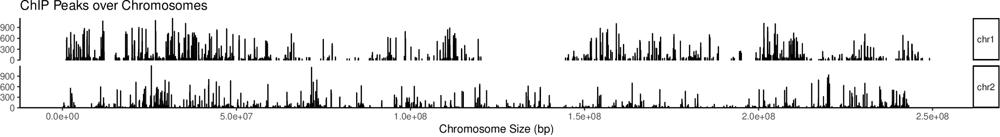{kind=link}
Fig: Coverage plot for HeLa replicate 1 peaks
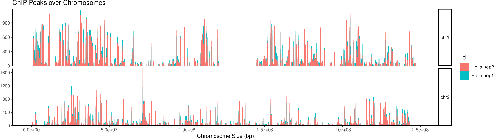
{kind=link}
Fig: Coverage plot for HeLa replicate 1 and 2 peaks
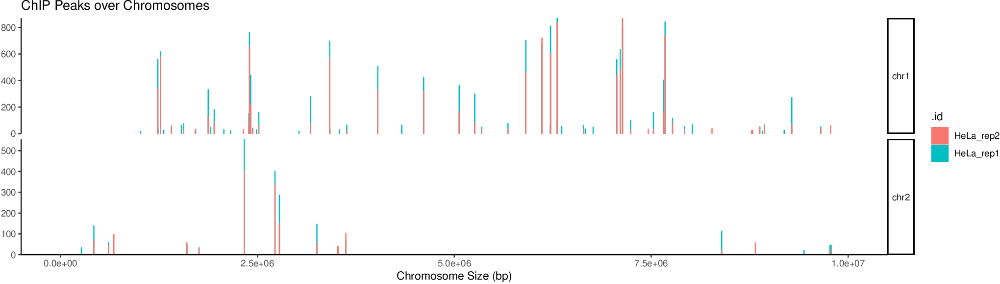
{kind=link}
Fig: Coverage plot for HeLa replicate 1 and 2 peaks (selected region)
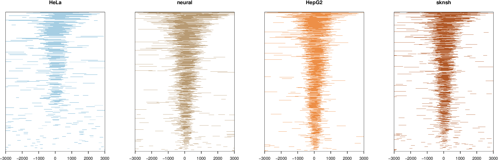
{kind=link}
Fig: Heatmap of ChIP peaks in different cell lines
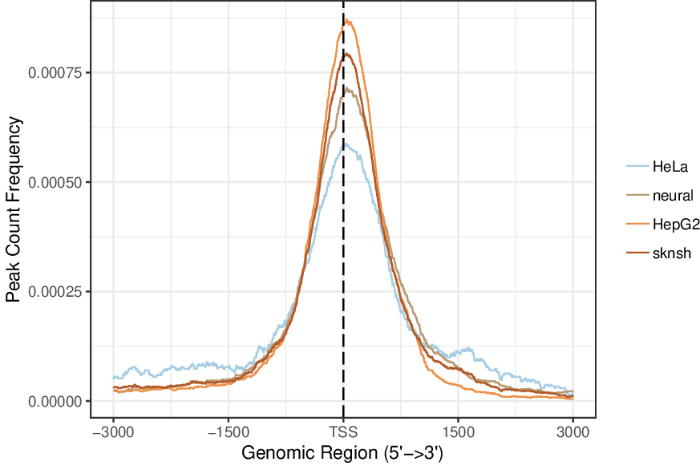
{kind=link}
Fig: Average profile of ChIP peaks in different cell lines
Peak annotation
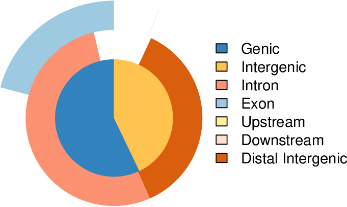{kind=link}
Fig: Genomic annotations (vennpie)
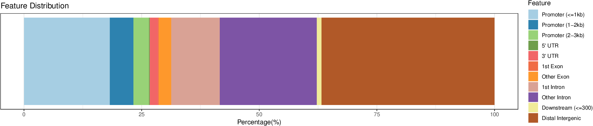
{kind=link}
Fig: Genomic annotations (barplot)
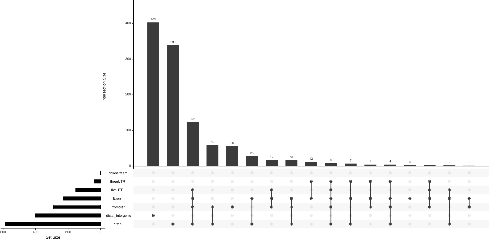
{kind=link}
Fig: Annotations overlap with UpSetPlot
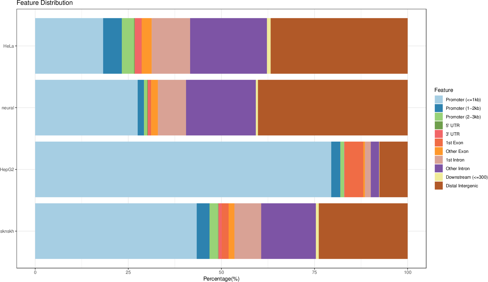
{kind=link}
Fig: Genomics locations: dataset comparisons with barplot
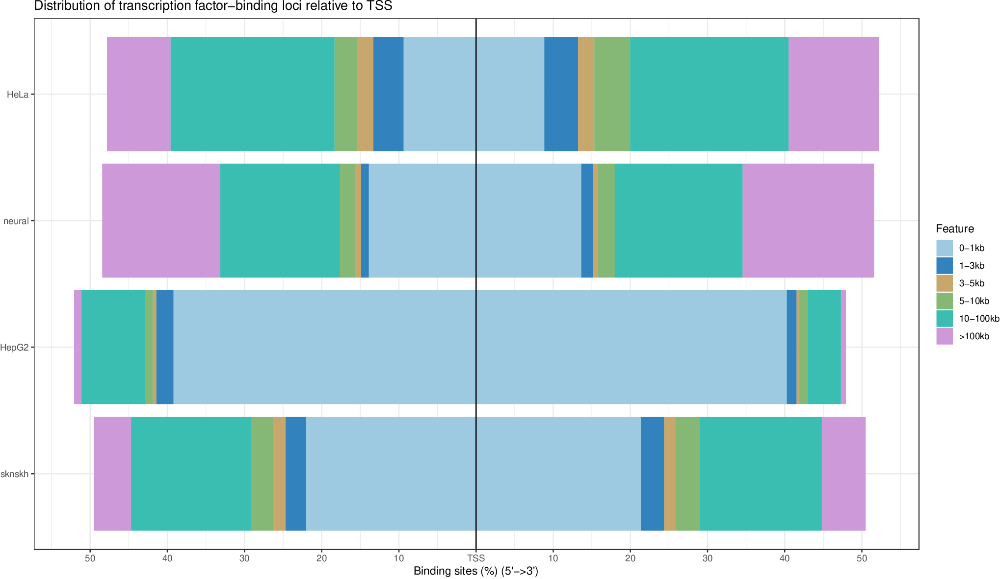
{kind=link}
Fig: Distance to TSS: datasets comparisons
Functional annotation
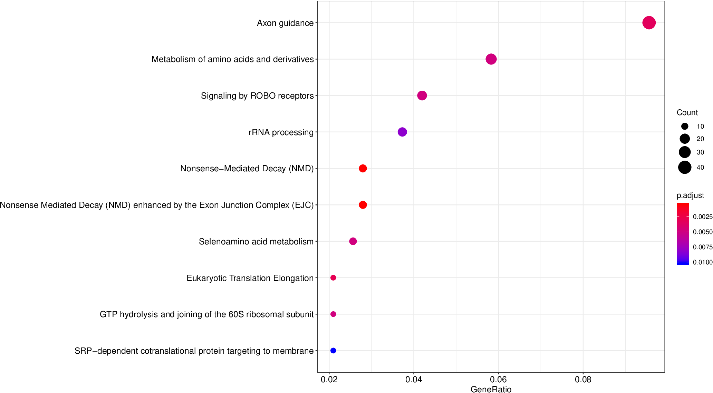{kind=link}
Fig: Dotplot for enriched reactome pathways for neuronal peaks (many-to-many mapping)
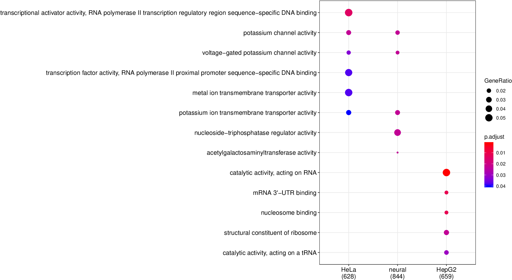
{kind=link}
Fig: Comparison of enriched GO MF terms (mapping to the nearest gene)
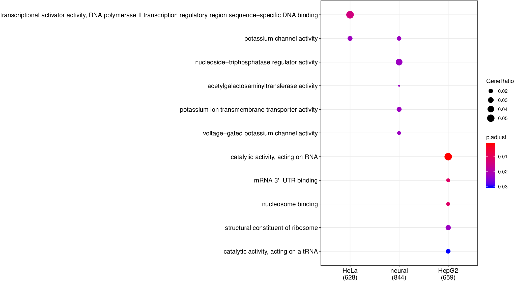
{kind=link}
Fig: Comparison of enriched GO MF terms (mapping to the nearest gene) after reducing redundant terms